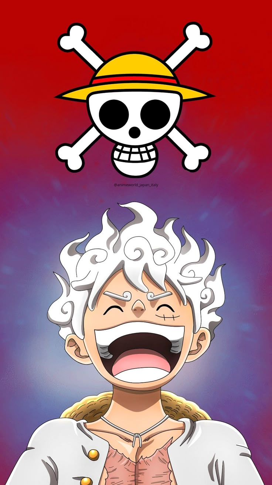

Alias: Topi Jerami, Manusia karet. Jabatan: Kapten. Tebusan/Bounty: ฿3.000.000.000
Monkey D. Luffy (モンキー･D･ルフィ, Monkii D. Rufi) adalah seorang karakter fiksi dan tokoh protagonis utama dalam serial anime dan manga One Piece karya Eiichiro Oda.[1] Ia merupakan putra kandung dari pemimpin Pasukan Revolusioner, Monkey D. Dragon, cucu kandung dari Angkatan Laut terkenal, Monkey D. Garp, putra angkat dari bandit gunung, Curly Dadan, dan saudara angkat dari Portgas D. Ace si "Tinju Api" dan Sabo. Tujuan hidupnya adalah menjadi Raja Bajak Laut dengan menemukan harta karun legendaris: One Piece yang telah ditinggalkan oleh Raja Bajak Laut sebelumnya, Gol D. Roger. Ia percaya dengan menjadi seorang Raja Bajak Laut, ia akan menjadi orang yang paling memiliki kebebasan di seluruh dunia. Ia memakan buah iblis bernama Gomu-Gomu (Hito-Hito fruit model Nika) -. Buah ini memberinya kekuatan sebagai manusia karet. Sebagai pendiri dan kapten dari Kelompok Bajak Laut Topi Jerami, ia tidak hanya menjadi orang pertama yang menciptakannya, tapi juga menjadi petarung terkuat di kelompoknya.
Sosok Luffy sebagai seorang pembuat masalah telah mendunia dan dikenal baik oleh para anggota Angkatan Laut, Shichibukai hingga Yonko karena begitu banyaknya jumlah perilaku kriminal yang telah ia perbuat. Akibat ulahnya itu, pihak Pemerintah Dunia telah menganggapnya sebagai seseorang yang sangat berbahaya. Ia juga telah mendapat reputasi sebagai orang yang "nekat", atau bahkan dalam kasus tertentu dianggap "gila", setelah menyebabkan terjadinya insiden di Enies Lobby, menyusup masuk dan keluar dari Impel Down, serta keikutsertaannya dalam Perang Penentuan di Markas Besar Angkatan Laut. Oleh karena itu, Luffy, tidak hanya menjadi satu-satunya bajak laut yang telah berhasil masuk ke dalam 3 fasilitas terpenting milik pemerintah, tapi juga menjadi satu-satunya yang berhasil keluar dari ketiganya dengan selamat. mencoba
Luffy dilahirkan di desa Fuusha, sebuah desa kecil di Kerajaan Goa yang terletak di East Blue. Ketika Garp pergi, Luffy kecil diasuh oleh Mayor Woop Slap dan Makino
Ketika Monkey D. Luffy masih kecil, dia bertemu kelompok bajak laut yang singgah di desanya. Kelompok bajak laut tersebut dipimpin oleh Shanks dan Luffy ingin sekali bergabung dengannya. Luffy menusuk bagian bawah matanya dengan pisau sebagai tanda bahwa ia mempunyai keberanian, tetapi Shanks tetap menolaknya. Setelah Luffy bertemu dengan Higuma, Luffy diculik oleh kawanan perompak gunung dan Luffy dibawanya ke laut. Shanks menolongnya walaupun harus kehilangan sebelah tangannya. Ternyata alasan Shanks menolak Luffy adalah karena dahsyatnya lautan. Kemudian Luffy berjanji akan melebihi Shanks dan menjadi raja bajak laut lalu Shanks memberikan topi jeraminya dan berkata:
"Kuberikan topi berhargaku ini padamu, kelak kau harus mengembalikannya padaku."
Setelah perang besar dengan pihak marine, Luffy mengalami trauma yang sangat besar atas kematian Ace. Luffy kemudian mengamuk di pulau Kuja dan coba dihentikan oleh Jimbei. Rayleigh kemudian datang ke pulau Kuja dengan berenang setelah kapalnya tenggelam. Rayleigh tampaknya punya kenangan tersendiri di pulau ini karena semua orang mengenalnya. Kedatangan Rayleigh adalah ingin mengajak Luffy dan Jinbei kembali ke Marine HQ untuk menyampaikan pesan kepada kru topi jerami yang lain untuk bertemu kembali setelah dua tahun. Setelah kejadian tersebut Luffy kemudian pergi bersama Rayleigh untuk berlatih menggunakan kekuatan haki. Dua tahun kemudian Luffy kembali ke pulau Shabaody namun dia bertemu dengan bajak laut yang meniru bajak laut topi jerami. Dan di sana Vegapunk dan robot X Kuma datang, Luffy mengalahkannya dengan satu pukulan, yang membuat Sentomaru (pengawal dokter vegapunk) kaget melihat bahwa Luffy sudah dapat menguasai haki untuk bertempur. Lalu Luffy setelah bertemu teman-temannya lagi, dia pun melanjutkan perjalanan ke dunia baru melalui dasar laut tepatnya di pulau manusia ikan. Dalam perjalanan menuju pulau manusia ikan, Luffy dan kawan-kawan bertemu kraken (hewan legenda yang merupakan musuh utama umat manusia) dan berhasil menjinakkan kraken. Tapi mereka berpisah karena arus terjun dan bertemu kembali di pulau manusia ikan. Di sana Luffy juga mendapat masalah, karena kasus hilangnya putri duyung akibat supernova yang disandranya menculik para duyung, tapi pada akhirnya Luffy membantu Raja Neptun melawan pasukan yang dipimpin Hody beserta Vander Deckken. Pertempuran besar terjadi setelah Hody berhasil mengumpulkan pasukan berjumlah 100.000 orang untuk menghancurkan Kerajaan Ryuguu. Namun dengan Haki, Luffy membuat pingsan separuh (50.000) dari pasukan Hody, dan Luffy mengalahkan Hody dengan serangan barunya yang bernama 'RED HAWK'. Kemudian Luffy dan kru pergi menuju Punk Hazard karena mendapatkan SOS telepon dari seseorang yang terjebak di Punk Hazard. Punk Hazard adalah pulau yang sebagian adalah pulau yang dipenuhi api dan gunung berapi dan sebagiannya lagi adalah pulau bersalju tebal dan gunung es. Mereka terbagi menjadi 2, Luffy, Zoro, Robin dan Ussop pergi ke pulau dan yang lainnya tinggal di kapal. Kemudian tim Luffy bertemu dengan naga, badan manusia yg hanya bagian kaki, dan centaurus. Di sisi lain, tim yg berada di kapal diculik oleh anak buah Caesar Clown, ilmuwan mantan partner Vegapunk.
Ciri khas bertarungnya adalah menyerang dengan memanjangkan bagian tubuhnya. Semua nama jurusnya selalu diawali dengan kata "Mogu-mogu" dan kemudian diikuti dengan nama senjata atau artileri (contoh: 'Mogu Mogu no Pistol', 'Mogu Mogu no Bazooka', 'Mogu Mogu no Gatling', dll).
Gear Second: Teknik mempercepat aliran darah tetapi organ tubuhnya tidak hancur karena atribut karet pada tubuhnya. Efek dari Gear Second ini adalah kecepatan atau agility meningkat. Kata "jet" juga ditambahkan dalam nama jurusnya (contoh: Mogu Mogu no Jet pistol). Jika ditambah dengan Haki, tinjunya jadi menimbulkan efek ledakan.
Gear Third: Teknik memperbesar tulang dengan meniupnya seperti balon. Efek dari Gear Third adalah kekuatan serangannya meningkat, tetapi kecepatan serangan menurun. Kata "Gigant" juga ditambahkan dalam nama jurusnya (contoh: Mogu Mogu no Gigant Pistol). Jika ditambahkan haki, tangannya menjadi hitam dan semakin keras.
Gear Four: Teknik memperbesar badan seukuran gorila, dengan menggabungkan boushuku haki. Kekuatan ini mirip tubuh gorila dengan daya hancur yang sangat kuat. Dan ditambah dengan kekuatan tinjuan yang bisa mental di udara. (kekuatan ini muncul di Dressrosa sewaktu melawan sichibukai Donquixote Doflamingo).
Gear Fifth: Penggunanya akan memiliki tubuh dengan karakteristik seperti karet. Dia akan bertarung dengan penuh imajinasi dan membuat semua orang tersenyum. "Pejuang Kebebasan" yang juga dikenal sebagai " NIKA SANG DEWA MATAHARI". Kebangkitannya akan di tandai oleh meningkatnya "Kekuatan Lengan" serta "Kebebasan" pada tubuhnya yang seperti karet. Kekuatannya dianggap sebagai kekuatan paling tidak masuk akal di dunia.